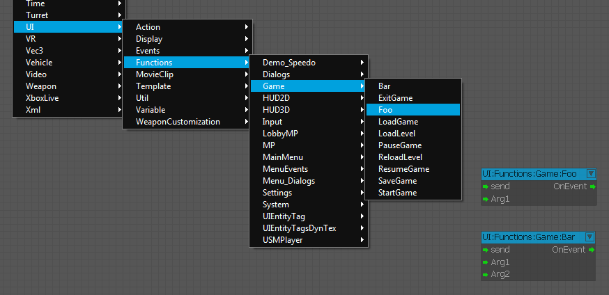
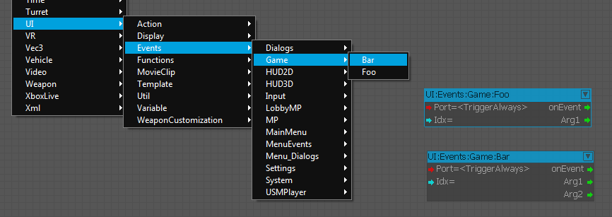

Overview
The UI System comes with an event system, which can also be used to communicate between C++ and the UI flowgraph / actions.
The event system provides an easy way to define function and event nodes and handle them in C++.
Function nodes
Function nodes are available to all flowgraphs and provide an easy way to call C++ code.
Here are the steps to create them easy in code:
- First you have to create the class that will handle the function node calls. Create a new .h file and name it UIFunctions.h
#ifndef __UIFunctions_H__
#define __UIFunctions_H__
#include <IFlashUI.h>
class CUIFunctions : public IUIEventListener
{
public:
CUIFunctions();
~CUIFunctions();
// IUIEventListener
virtual SUIArgumentsRet OnEvent( const SUIEvent& event );
virtual void OnEventSystemDestroyed(IUIEventSystem* pEventSystem);
// ~IUIEventListener
private:
SUIEventReceiverDispatcher<CUIFunctions> m_Dispatcher;
IUIEventSystem* m_pGameEvents;
// These are the functions, which will be linked to the separate flowgraph nodes
void OnFoo( const SUIEvent& event );
void OnBar( const SUIEvent& event );
};
#endif- Create a new .cpp file and name it UIFunctions.cpp. This is the file, which will contain the implementation of the functions.
#include "StdAfx.h"
#include "UIFunctions.h"
CUIFunctions::CUIFunctions()
: m_pGameEvents(NULL)
{
if (gEnv->pFlashUI)
{
// create a new event system called "Game"
// type is eEST_UI_TO_SYSTEM; nodes for this event system will be found unter UI:Functions
// register as event listener to the event system
m_pGameEvents = gEnv->pFlashUI->CreateEventSystem( "Game", IUIEventSystem::eEST_UI_TO_SYSTEM );
m_pGameEvents->RegisterListener( this, "UIFunctionsListener" );
m_Dispatcher.Init(m_pGameEvents);
// create a new function description for "Foo"
SUIEventDesc fooDesc( "Foo", "Foo", "Call a function named foo" );
// add a parameter description "Arg1" to the function description
fooDesc.InputParams.Params.push_back( SUIParameterDesc( "Arg1", "Arg1", "First Arg" ) );
// register the function description to the dispatcher
m_Dispatcher.RegisterEvent( fooDesc, &CUIFunctions::OnFoo );
// create another function description for "Bar"
SUIEventDesc barDesc( "Bar", "Bar", "Call a function named bar" );
barDesc.InputParams.Params.push_back( SUIParameterDesc( "Arg1", "Arg1", "First Arg" ) );
barDesc.InputParams.Params.push_back( SUIParameterDesc( "Arg2", "Arg2", "Second Arg" ) );
m_Dispatcher.RegisterEvent( barDesc, &CUIFunctions::OnBar );
}
}
CUIFunctions::~CUIFunctions()
{
if( m_pGameEvents )
m_pGameEvents->UnregisterListener( this );
}
SUIArgumentsRet CUIFunctions::OnEvent( const SUIEvent& event )
{
// use the dispatcher to dipatch the event to the correct function
return m_Dispatcher.Dispatch( this, event );
}
void CUIFunctions::OnEventSystemDestroyed(IUIEventSystem* pEventSystem)
{
m_pGameEvents = NULL;
}
// This function will be called when a flowgraph triggers UI:Functions:Game:Foo
void CUIFunctions::OnFoo( const SUIEvent& event )
{
int arg1 = 0;
if ( !event.args.GetArg(0, arg1) )
{
CryLogAlways("Foo: argument 1 has wrong type (should be int)");
return;
}
// do something
}
// This function will be called when a flowgraph triggers UI:Functions:Game:Bar
void CUIFunctions::OnBar( const SUIEvent& event )
{
bool arg1 = false;
float arg2 = 0;
if ( !event.args.GetArg(0, arg1) )
{
CryLogAlways("Foo: argument 1 has wrong type (should be bool)");
return;
}
if ( !event.args.GetArg(1, arg2) )
{
CryLogAlways("Foo: argument 2 has wrong type (should be float)");
return;
}
// do something
}- The next step is to create an instance of that class and let the engine know about it. Open Game.h, forward declare your class and add a private member to CGame:
#ifndef __GAME_H__
#define __GAME_H__
...
class CUIFunctions;
...
class CGame :
public IGame, public IGameFrameworkListener, public ILevelSystemListener
{
...
private:
...
CUIFunctions* m_pUIFunctions;
...
}
...- Open Game.cpp init m_pUIFunctions with NULL in the construcor, delete m_pUIFunctions in the deconstructor and create the CUIFunction object at the end of the init function.
#include "StdAfx.h"
#include "Game.h"
...
#include "UIFunctions.h"
CGame::CGame()
...
{
m_pUIFunctions = NULL;
}
CGame::~CGame()
{
...
SAFE_DELETE(m_pUIFunctions);
}
...
bool CGame::Init(IGameFramework *pFramework)
{
...
if ( NULL == m_pUIFunctions )
{
m_pUIFunctions = new CUIFunctions();
}
}
...It is important to create all your classes that uses the UI event system before CompleteInit is called.
This code will result in two new nodes UI:Functions:Game:Foo and UI:Functions:Game:Bar.

If the port "send" is triggered, it will call the C++ code in UIFunctions.cpp.
Event nodes
Event nodes are very similar to Function nodes. They are used to send events from C++ to any UI flowgraph / action. e.g. you can create a singleton class to call events from everywhere of your code.
- Create a .h file UIEvents.h
#ifndef __UIEvents_H__
#define __UIEvents_H__
#include <IFlashUI.h>
class CUIEvents
{
public:
// access to instance
static CUIEvents* GetInstance()
{
static CUIEvents inst;
return &inst;
}
// init the game events
void Init();
// events
enum EUIEvents
{
eUIGE_FooEvent,
eUIGE_BarEvent,
};
void SendEvent( EUIEvents event, const SUIArguments& args );
private:
CUIEvents() : m_pGameEvents(NULL) {};
~CUIEvents() {};
IUIEventSystem* m_pGameEvents;
std::map<EUIEvents, uint> m_EventMap; // Pick your favorite container
};
#endif- Create a .cpp file UIEvents.cpp
#include "StdAfx.h"
#include "UIEvents.h"
void CUIEvents::Init()
{
if (gEnv->pFlashUI)
{
// create a new event system called "Game"
// type is eEST_SYSTEM_TO_UI; nodes for this event system will be found under UI:Events
m_pGameEvents = gEnv->pFlashUI->CreateEventSystem( "Game", IUIEventSystem::eEST_SYSTEM_TO_UI );
// create a new event description for "Foo"
SUIEventDesc fooDesc( "Foo", "Foo", "Event named foo" );
// add a parameter description "Arg1" to the event description
fooDesc.InputParams.Params.push_back( SUIParameterDesc( "Arg1", "Arg1", "First Arg" ) );
// register the event to the event system and associate the id with the event enum
m_EventMap[ eUIGE_FooEvent ] = m_pGameEvents->RegisterEvent( fooDesc );
// create another event description for "Bar"
SUIEventDesc barDesc( "Bar", "Bar", "Event named bar" );
barDesc.InputParams.Params.push_back( SUIParameterDesc( "Arg1", "Arg1", "First Arg" ) );
barDesc.InputParams.Params.push_back( SUIParameterDesc( "Arg2", "Arg2", "Second Arg" ) );
m_EventMap[ eUIGE_BarEvent ] = m_pGameEvents->RegisterEvent( barDesc );
}
}
void CUIEvents::SendEvent( EUIEvents event, const SUIArguments& args )
{
// send the event
if (m_pGameEvents)
{
m_pGameEvents->SendEvent( SUIEvent(m_EventMap[event], args) );
}
}- Open Game.cpp, include "UIEvents.h" and add to the end of the Init function:
...
#include "UIEvents.h"
...
bool CGame::Init(IGameFramework *pFramework)
{
...
CUIEvents::GetInstance()->Init();
}
...The code will create two nodes for the flowgraph:

Now you can call from everywhere in your code the SendEvent function to trigger e.g. the UI:Events:Game:Bar Node:
int arg1 = 12;
float arg2 = 1.4f;
SUIArguments args;
args.AddArgument( arg1 );
args.AddArgument( arg2 );
CUIEvents::GetInstance()->SendEvent( CUIEvents::eUIGE_BarEvent, args );